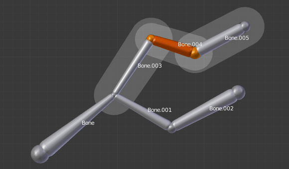
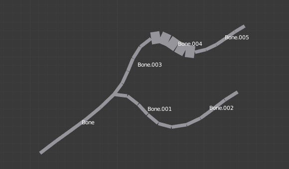

Трансформації -- Transform¶
Трансформації -- Transform¶

Панель «Трансформації» -- Transform для арматур у Режимі Правки -- Edit Mode.
Ми не будемо тут деталізуватися на різних трансформаціях кісток, таких як зблокування з віссю, опорні точки тощо, оскільки вони є загальними для редагування більшості об'єктів, та вже описані тут -- mesh section. Це ж саме стосується дзеркалення, що здійснюється майже так само, як при редагуванні сітей -- mesh editing. Просто майте на увазі, що корені та верхівки поводяться більш або менш подібно як вершини сітей, самі кістки діють подібно як ребра сіті.
Як ви знаєте, кістки можуть мати два типи відношень: вони можуть бути прирідненими і, до того ж, з'єднаними. Лише приріднені кістки поводяться у Режимі Правки -- Edit Mode точно так, ніби вони не мають жодних відношень. Вони можуть переноситися, обертатися, масштабуватися тощо без впливу на їх нащадків. Проте, приріднені плюс з'єднані кістки повинні завжди мати з'єднання верхівок предків з коренями нащадків, а тому трансформуючи кістку, ви здійснюватимете вплив на усі з'єднані з нею предок/нащадки/спільнопредкові.
Для всіх інших засобів трансформування поняття «локальні осі» означає осі об'єкта, тут вони є власними осями кістки (коли ви зблоковуєте з локальною віссю, натиснувши відповідну клавішу двічі, то примус трансформування застосовується вздовж локальної осі, а не осі об'єкта арматури).
Наостанок, ви можете редагувати на панелі Transform в регіоні Properties 3D Огляду позиції та радіус обох суглобів активної виділеної кістки, а також як її вертільне обертання -- roll rotation.
Масштабувати Радіус -- Scale Radius¶
Орієнтир -- Reference
| Mode: | Edit Mode |
|---|---|
| Menu: | |
| Hotkey: | Alt-S |
Ви можете змінювати радіус впливу кістки, виділивши її голову, тіло або хвіст, натиснувши Alt-S та рухаючи мишу вліво або вправо (що краще видно у режимі візуалізації кісток «Оболонка» -- Envelope). Якщо виділено тіло кістки, то радіуси голови й хвоста будуть масштабуватися усереднено. І як звичайно, для з'єднаних кісток ви масштабуєте одночасно радіуси верхівки предка та корені його нащадків.
Також ви можете змінювати радіус впливу кістки, виділивши її хвіст, тіло або голову, та у відділі панелі «Редактор Властивостей > Кістка > Деформації > Радіус Оболонки» -- вручну увести нові значення для устав «Хвіст» -- Tail та «Голова» -- Head.

Одинична виділена кістка у візуалізації «Восьмигранник» -- Octahedron. |

Після звичайного масштабування Scale. |

Одинична виділена кістка у візуалізації «Оболонка» -- Envelope. |
{kind=link}
{kind=link}
Note that, when you resize a bone (either by directly scaling it, or by moving one of its joints), Blender automatically adjusts the end-radii of its envelope proportionally to the size of the modification. Therefore, it is advisable to place all the bones first, and only then edit their properties.
Масштабувати Відстань Оболонки -- Scale Envelope Distance¶
Орієнтир -- Reference
| Mode: | Edit Mode and Pose Mode |
|---|---|
| Menu: | |
| Hotkey: | Ctrl-Alt-S |
Ви можете змінювати розмір об'єму Оболонки Кістки у режимі візуалізації кісток «Оболонка» -- Envelope, клацнувши на її тілі, натиснувши Ctrl-Alt-S та тягнучи мишею вліво або управо, об'єм Оболонки Кістки буде змінюватися відповідно.
Ви можете також змінювати цей об'єм Оболонки Кістки, виділивши її та увести вручну нове значення для устави «Редактор Властивостей > Кістка > Деформації > Оболонка > Відстань > Відстань» -- .
Змінення об'єму Оболонки Кістки не змінює розмір цієї кістки, а тільки діапазон, у межах якого вона може впливати на вершини нащадкових об'єктів.

Масштабована відстань її оболонки. |

Одинична виділена кістка зі стандартним розміром у режимі візуалізації «Г-Кістка» -- B-Bone. |

Масштабована відстань її оболонки. |

Ця ж арматура у Режимі Об'єкта -- Object Mode та візуалізації «Г-Кістка» -- B-Bone зі збільшеним масштабом розміру кістки Bone.004. |
{kind=link}
Вирівняти Кістки -- Align Bones¶
Орієнтир -- Reference
| Mode: | Edit Mode |
|---|---|
| Menu: | |
| Hotkey: | Ctrl-Alt-A |
ToDo <2.72.
Вертіння Кістки -- Bone Roll¶
У Режимі Правки -- Edit Mode ви можете керувати вертінням кістки (тобто її обертанням навколо своєї осі Y).
Проте, після редагування арматури або коли використовується Ейлорове обертання -- euler rotation, ви можете схотіти установити вертіння кістки.
Задати Вертіння Кістки -- Set Bone Roll¶
Орієнтир -- Reference
| Mode: | Edit Mode |
|---|---|
| Menu: | |
| Hotkey: | Ctrl-R |
Це є режимом трансформування, в якому ви можете редагувати вертіння усіх виділених кісток.
Перерахувати Вертіння -- Recalculate Roll¶
Орієнтир -- Reference
| Mode: | Edit Mode |
|---|---|
| Menu: | |
| Hotkey: | Ctrl-N |
- Орієнтація Осі -- Axis Orientation
- Локально Дотично -- Local Tangent
Вирівнює вертіння відносно до осі, визначеної кісткою та її предком.
X, Z
- Глобальна Вісь -- Global Axis
Вирівнює вертіння по глобальній X, Y, Z осі.
X, Y, Z
- Активна Кістка -- Active Bone
- Наслідує обертання активної кістки.
- Вісь Огляду -- View Axis
- Set the roll to align with the viewport.
- Курсор -- Cursor
- Задає вертіння у напрямку 3D курсора.
- Перевернути Вісь -- Flip Axis
- Розвертає напрям осі.
- Найкоротше Обертання -- Shortest Rotation
- Запобігає вертінню кістки більш ніж на 90 градусів від його поточного значення.
Перемкнути Напрям -- Switch Direction¶
Орієнтир -- Reference
| Mode: | Edit Mode |
|---|---|
| Menu: | , |
| Hotkey: | Alt-F |
У більш ранніх версіях цей засіб був не доступний з меню Armature, а тільки зі спливного меню Specials за W. Він дозволяє вам перемикати напрям виділених кісток (тобто, їх корінь стає їх верхівкою, та навпаки).
Перемикання напрямку кістки, як правило, руйнує ланцюг(и), до якого(их) вона належить. Однак, якщо ви перемкнете напрямок усього (або частини) ланцюга, то його кістки все ще будуть приріднені/з'єднані, але у «зворотному порядку». Дивіться Ілюстрацію Приклад перемикання напрямку..

Арматура з виділеними однією кісткою та одним ланцюгом з трьох кісток перед перемиканням. |

Напрямки виділених кісток було перемкнуто. Bone.005 більше вже не з'єднана і не приріднена ні до чого. Ланцюг перемкнутих кісток все ще існує, але розвернутий (тепер Bone.002 є його коренем, а Bone є його верхівкою). Bone.003 є тепер вільною кісткою. |